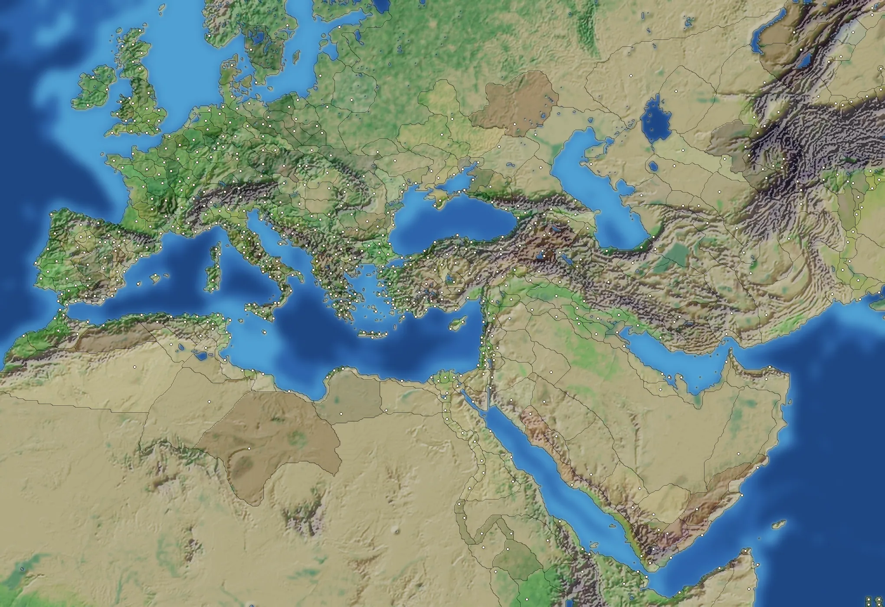
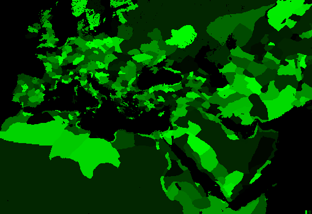

The world map
← wiki index · regions and settlements
The campaign map at the start of the RIS Light campaign.


← wiki index · regions and settlements
The campaign map at the start of the RIS Light campaign.

